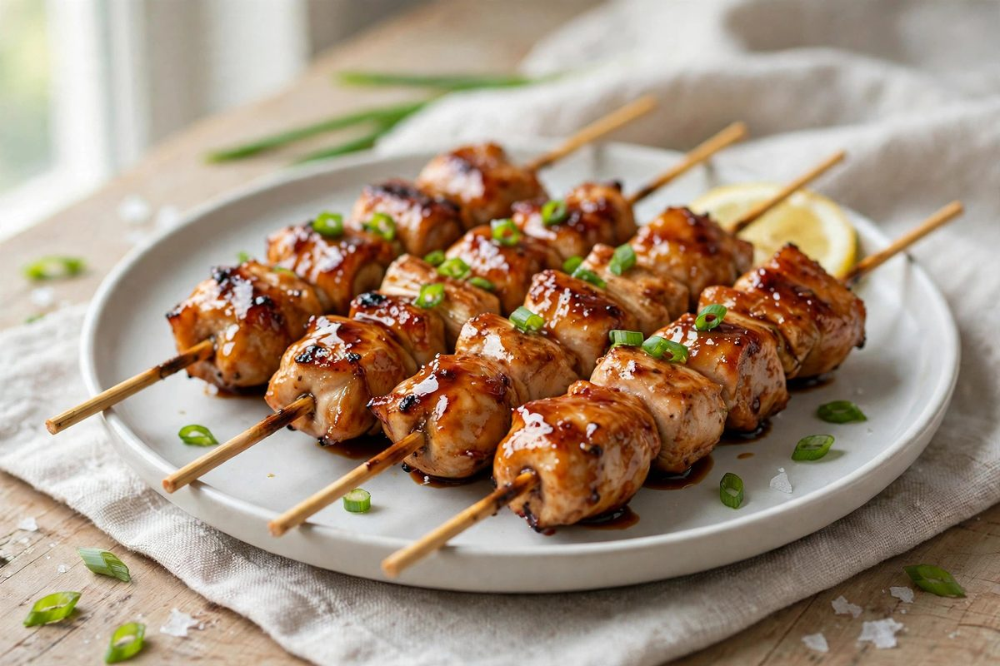

Yakitori — Japanese Grilled Chicken Skewers
How to make yakitori at home: chicken cuts, tare sauce, skewering, and grilling without a charcoal grill.
What yakitori is
Yakitori means grilled chicken, and it refers to bite-sized pieces of chicken threaded onto bamboo skewers and grilled over charcoal, then brushed with a sweet-savoury tare sauce or seasoned simply with salt. It is the food of Japanese izakaya pubs, eaten with beer and shared among friends, and it is also one of the easiest Japanese dishes to make at home. The skill is in the chicken: different cuts, from thigh to wing to meatball, each with its own texture, cooked quickly over high heat so the outside chars lightly and the inside stays juicy.
Choosing the chicken
Chicken thigh is the best cut for yakitori, because it stays juicy over high heat. Breast dries out quickly and is a poor choice unless you watch it carefully. Cut the thigh into even pieces about three centimetres across, keeping some skin on for flavour and crispness. Other good options are chicken wings, chicken meatballs (tsukune), and negima, which alternates chicken with spring onion. Buy skin-on, bone-in thighs and cut them yourself if you can; the pieces are more even and the skin adds flavour.
Tare sauce
Tare is a glaze of soy sauce, mirin, sake, and sugar, simmered until slightly thick. A simple ratio is equal parts soy sauce and mirin with half as much sake and a little sugar. Simmer it for five to ten minutes until it coats a spoon, then let it cool. The sauce keeps in the fridge for weeks and improves with use: in yakitori shops, the same tare pot is topped up for years. Brush the sauce on during the last minute of grilling, not at the start, because the sugar burns if it cooks too long.
Skewering and grilling
Soak bamboo skewers in water for thirty minutes so they do not burn. Thread the chicken pieces tightly together, leaving no gaps, with the pieces facing the same way so they cook evenly. Grill over high heat on a barbecue, grill pan, or under a hot grill, turning every minute or two. Total cooking time is about eight to ten minutes. For salt-style yakitori (shio), season with salt before grilling and serve with lemon. For tare-style, grill plain first, brush with tare near the end, and grill for one more minute to set the glaze.
Tsukune meatballs
Tsukune are minced chicken meatballs, often made with minced thigh, egg, breadcrumbs, spring onion, and ginger, shaped into ovals around the skewer. They need a gentler heat and a longer cook than plain chicken, about ten to twelve minutes, and they are usually served with tare and a raw egg yolk for dipping. They are a little more work, but they are many people's favourite yakitori, because they are soft, juicy, and full of flavour. Shape them firmly so they do not fall apart on the grill.
Serving
Serve yakitori hot from the grill, on the skewers, with rice or simply as a snack with drinks. A small dish of extra tare for dipping, lemon wedges, and a sprinkle of shichimi togarashi (seven-spice) complete it. Make a variety: some salt, some tare, some with spring onion, and some meatballs. Yakitori is best eaten fresh and hot, so grill in batches and serve as you go. It is an ideal dish for a small gathering, because the grill becomes the centre of the evening.
Frequently Asked Questions
Can I make yakitori without a barbecue?
Yes. A hot grill pan on the stove or the grill in your oven works well. The flavour will be less smoky than charcoal, but the chicken and tare still taste excellent.
Should I use breast or thigh for yakitori?
Thigh is much better. It stays juicy over high heat and has more flavour. Breast dries out quickly on skewers, so use it only if you grill it briefly and watch it closely.
How long does tare sauce keep?
In a sealed container in the fridge, tare keeps for two to three weeks. Bring it to room temperature before brushing it on, and do not return used sauce to the container.